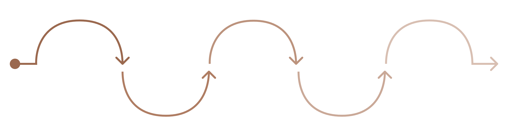

PhD research timeline · 36-month plan
From field sampling to One Health translation.
A structured 3-year timeline aligned with the finalized 8-step methodology—spanning Assam field sampling, metagenomics sequencing, QIIME 2 bioinformatics, GO/KEGG pathway networks, statistical omics translation, and thesis submission.
PhD execution phases
in detail.
Eight linked phases translating the finalized proposal into actionable milestones across 36 months.
Literature review, hypothesis formulation & study design
Months 1 – 4Build the theoretical framework for cattle microbiome humanisation. Comprehensive review of livestock gut metagenomics, urban environmental adaptations, resistome dynamics, and One Health surveillance frameworks.
Systematic literature review
Catalogue current research on cattle gut microbiota, humanisation markers, and resistome penetration across urban ecosystems.
Sampling protocol design
Define criteria for selecting 2 districts in Assam, matching village and urban HQ sampling sites for climatic proximity.
Ethics & institutional approvals
Obtain necessary ethical clearances and permissions from local veterinary authorities and municipal councils.
Pilot collection test
Validate fresh faecal collection, cooling protocols, and transport chains to avoid DNA decay and airborne contamination.
Faecal matter collection across Assam
Months 4 – 9Execute field sampling across two districts in Assam. In each district, sample 2 village domestic cattle and 2 urban stray cattle from district headquarters. Match exact breed and gender for genetic uniformity. Collect fresh faecal matter immediately to prevent DNA decay and external atmospheric contamination.
District 1 & 2 field sampling
Collect samples across matched village domestic and urban HQ stray cattle in both selected Assam districts.
Breed & gender matching
Screen and record exact breed and gender uniformity across all animals to eliminate breed-related microbiota fluctuations.
Fresh collection & cold chain
Collect fresh faecal matter directly, prevent air exposure, and transport under strict cold-chain preservation.
Comprehensive metadata capture
Record diet details (controlled fodder vs. scavenged waste), antibiotic history, housing, and urban habitat conditions.
High-throughput metagenomic sequencing & quality verification
Months 8 – 13Dispatch prepared samples for whole-genome shotgun metagenomics sequencing. Implement a strict quality verification protocol upon raw data receipt—accepting high-depth libraries meeting error thresholds or issuing immediate reruns.
DNA extraction & library preparation
Extract high-purity total community genomic DNA from all faecal samples under sterile laboratory conditions.
Metagenomics sequencing dispatch
Perform high-throughput shotgun sequencing to capture total microbial and resistome diversity.
Quality threshold verification
Inspect raw FastQ files for base quality scores, read depth, adapter content, and sequence completeness.
Data acceptance / rerun protocol
Accept verified datasets meeting quality benchmarks; trigger rerun requests for suboptimal sequencing batches.
Bioinformatics pipeline & QIIME 2 classification
Months 12 – 18Execute an end-to-end computational pipeline integrating raw sequencing reads with field metadata. Perform QC filtering, tag removal, taxonomic classification down to order and genus levels using QIIME 2, and generate Python visualisations.
Raw data & metadata integration
Merge raw FastQ reads with curated dietary, geographical, and clinical metadata into standardized analysis tables.
Read QC & tag removal
Filter low-quality reads, trim adapters and barcodes, and remove host (bovine) genomic contamination.
QIIME 2 taxonomic classification
Classify all bacterial and archaeal microbiota down to order and genus levels using curated reference databases.
Python visualisations
Generate publication-ready relative abundance charts, alpha/beta diversity plots, and taxonomic heatmaps using Python.
Functional annotation (GO) & KEGG pathway network analysis
Months 16 – 24Annotate assembled genes into functional groups using Gene Ontology (GO) analysis aligned with internet-accessible databases. Map metabolic pathways via KEGG to identify functions of specific microbiota groups, and perform network analysis around functional clusters.
Gene Ontology (GO) analysis
Categorise identified microbial genes into biological processes, molecular functions, and cellular component groups.
Database alignment
Align assembled sequences against official GO databases to produce standardized functional annotations.
KEGG metabolic pathway mapping
Map Kyoto Encyclopedia of Genes and Genomes pathways involved in carbohydrate breakdown, SCFA production, and xenobiotic metabolism.
Pathway network analysis
Construct network graphs linking functional groups with discovered metabolic pathways to uncover ecological rewiring.
Statistical data analysis & biological interpretation
Months 22 – 28Directly compare domestic vs. urban stray cattle populations using robust statistical models. Translate omics findings to understand the diet-microbiome relationship, active microbial functions, host-microbiome interactions, zoonotic risks, and antimicrobial resistance patterns.
Population statistical comparisons
Perform multivariate differential abundance tests (DESeq2/ANCOM-BC) and PERMANOVA between domestic and stray cohorts.
Diet-microbiome translation
Correlate dietary types (controlled feed vs. scavenged refuse) with specific microbial taxa and functional shifts.
Zoonotic risk & pathogen profiling
Identify potential pathogenic species and opportunistic zoonotic microbes enriched in urban stray cattle.
AMR patterns & biomarker identification
Map antimicrobial resistance gene patterns and pinpoint candidate microbial biomarkers of anthropogenic exposure.
Outcome synthesis & One Health resistome assessment
Months 26 – 32Synthesise integrated evidence on Animal, Human, and Environmental interactions. Establish a baseline One Health profile for free-roaming stray cattle and deliver a quantitative assessment of current antibiotic resistance gene (ARG) penetration in urban ecosystems.
Integrated Animal-Human-Environment model
Synthesise multi-omics, metadata, and geospatial data into a unified model of environmental humanisation.
Stray cattle One Health baseline
Establish a comprehensive ecological baseline documenting the microbiome and pathogen carriage of urban stray cattle.
ARG penetration quantification
Quantify the abundance, diversity, and potential mobility of antibiotic resistance genes circulating in urban animals.
Stakeholder & policy brief
Draft executive summaries for veterinary departments, urban local bodies, and public health surveillance agencies.
Translational impact, publications & thesis defence
Months 30 – 36Translate research findings into livestock management practices, publish peer-reviewed papers in high-impact journals, present at international conferences, complete the doctoral dissertation, and successfully defend the PhD thesis.
Peer-reviewed publications
Submit 3–4 research manuscripts covering comparative metagenomics, GO/KEGG pathway networks, and One Health AMR dynamics.
Livestock management guidelines
Formulate recommendations for diet-based interventions and early microbial health indicators for cattle.
Dissertation writing & compilation
Compile comprehensive chapters into the finalized doctoral thesis following university guidelines.
Thesis submission & defence
Formal submission, expert evaluation, open seminar presentation, and final oral defence.
Gantt chart overview.
Visual timeline illustrating how the 8 methodology steps and execution phases overlap across the 36-month PhD programme.
Assam Sampling Done
Fresh faecal samples collected from matched breeds across village and urban HQ sites in 2 Assam districts.
Taxonomy Classified
Metagenomics QC complete; microbial communities classified to order and genus level via QIIME 2.
GO & KEGG Networks Built
Functional annotations aligned; metabolic pathways and AMR gene networks statistically mapped.
PhD Defended
Dissertation completed, One Health policy briefs delivered, and doctoral degree successfully defended.
